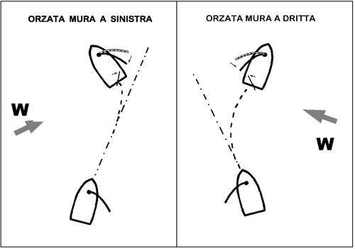

La Virata in Prua (o di Prua)
La virata è la manovra fondamentale che permette di cambiare direzione passando con la prua attraverso il vento. È essenziale per risalire il vento, poiché consente di passare da una "mura" all'altra (da bolina con vento da destra a bolina con vento da sinistra, e viceversa). La chiave è la coordinazione e la comunicazione dell'equipaggio.
La Sequenza in 5 Passi
- Comunicazione: Il timoniere avvisa l'equipaggio urlando "Pronti a virare?". L'equipaggio si prepara e risponde "Pronti!".
- Azione del Timoniere: Il timoniere spinge la barra del timone dal lato opposto a quello in cui vuole andare (verso "sottovento") e annuncia "Viro!". La barca inizia a girare verso il vento.
- Passaggio nel Vento: Mentre la prua attraversa l'angolo morto, il fiocco inizia a "fileggiare" (sbattere). Questo è il momento per l'equipaggio di spostarsi sul lato opposto della barca.
- Cambio delle Scotte: Chi si occupa del fiocco ("tailer") lascia la scotta vecchia (quella che era in tensione) e inizia a recuperare velocemente la scotta nuova, quella sul lato opposto, appena il fiocco passa dall'altra parte dell'albero.
- Assestamento: La barca si stabilizza sulla nuova andatura di bolina. Il timoniere regola la rotta e l'equipaggio "cazza" (tira) le vele alla giusta tensione per la nuova direzione.
Consigli Chiave
- Movimenti fluidi: Una virata efficace è una curva dolce, non una sterzata brusca.
- Attenzione al boma: Anche se in virata il boma si muove lentamente, tenetelo sempre d'occhio.
- Il tempismo è tutto: Lasciare la scotta vecchia troppo presto o cazzare la nuova troppo tardi fa perdere velocità alla barca.